Robot Master
An app designed for helping user control and manage smart home robots systematically and efficiently through a unified interface
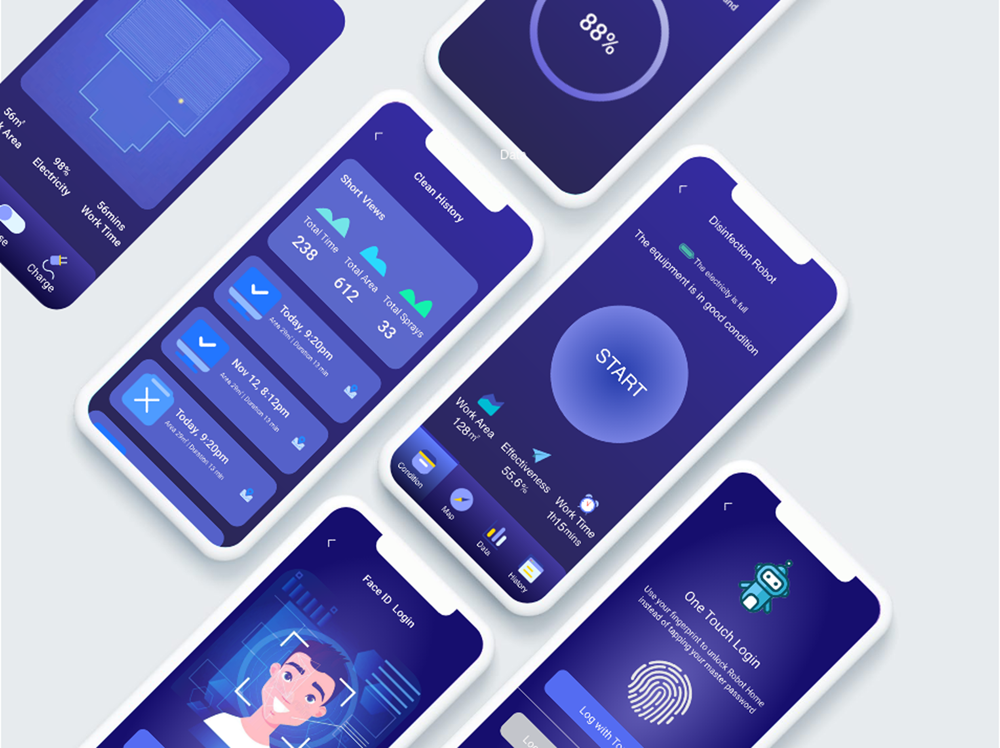
01INTRODUCTION
Project Overview
Robot Master is a smart product management app that enables users to control and manage home robots efficiently through a unified interface.
Inspired by the rapid growth of robotics and the increasing presence of smart home devices, this project explores how users can better manage and interact with these technologies. As robots become more integrated into daily life, the focus shifts from replacement concerns to effective coordination and control.
The idea also stems from a personal pain point—managing multiple devices across separate apps, which often leads to frustration and confusion. Based on user research, Robot Master was designed to simplify this experience by providing a centralized, user-friendly platform where users can easily add, manage, and control their smart home robots, improving overall convenience and quality of life.
02DESIGN CHALLENGE
How might we design a product that can help the owners of smart home robots better manage and control their devices?

03DESIGN DIRECTION
Solution
My solution is a smart products management mobile application. The application provides users with ability to manage all smart home robots by a single app systematically, integrate different brand products with one app, and master the devices conveniently with more functions like real-time monitor. With the application, user will have a more relaxing and intelligent life due to higher efficiency with smart home devices. What’s more, more people will buy smart products because it is more convenient to master them.
04USER RESEARCH
User Interview & Survey
In order to validate the quality of the idea, I conducted some quick user surveys with the primary user base that I was targeting.
I learned that 8/10 respondents have the problem that they have multi smart devices but feel very troublesome to master them separately by different apps. More than 90% of respondents thought it’s “very important” or “somewhat important” to have an app to centrally manage all of their smart home devices from different brands.
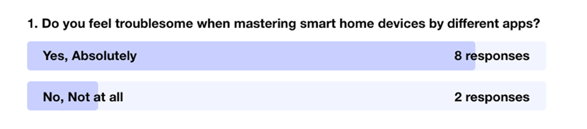
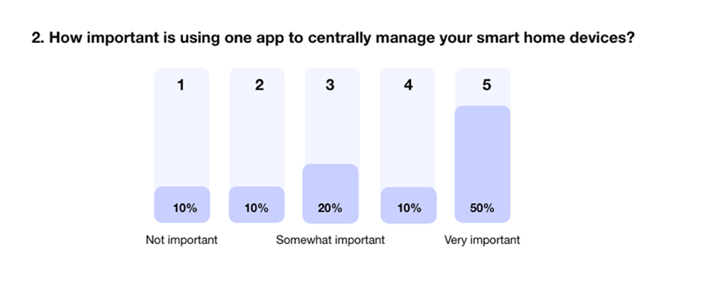
As an additional measure to the previous surveys, I also conducted a small interview with 5 people asking them what they find enjoyable and/or difficult about the using smart products with mobile apps.
The responses helped me gauge what the immediate thoughts of some users were and their pain points. Although these aren’t quantifiable, it gave me valuable insight into what is currently working and what is not.
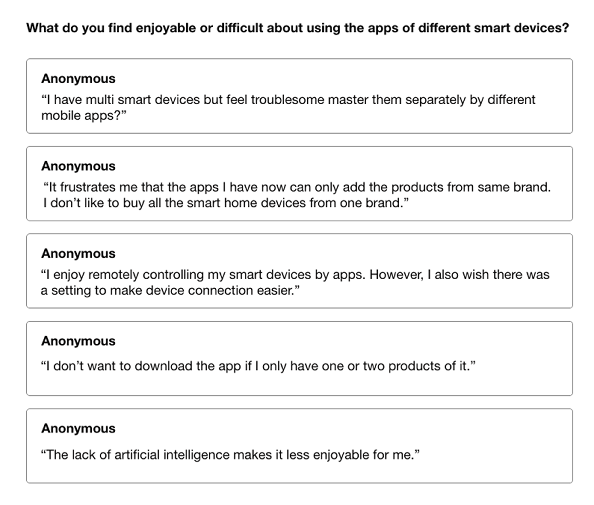
05FOCUS
Persona
After summarizing my research and identifying the pain points / opportunities, I created a persona that would exemplify the user type that I was targeting.
The persona helps give direction to what the intention and core needs of the design solution should be.
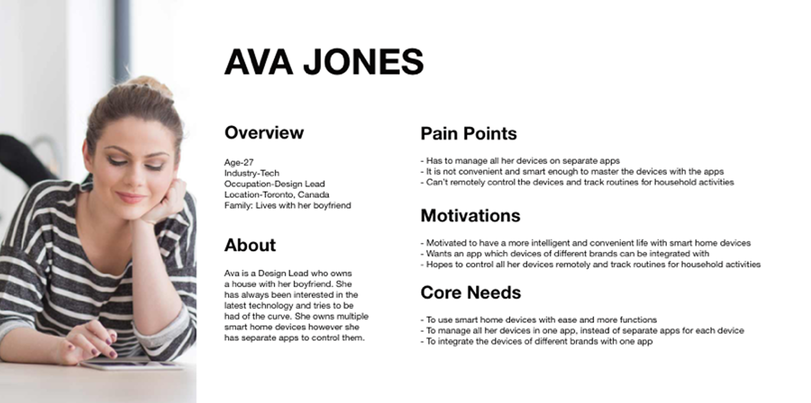
06IDEATION
Ideation the features
By taking a look at our user pain points, motivations, and core needs, I was able to come up with a list of features. The list included:
- Simplicity & Efficiency
- QR/Barcode Scanner Integration
- Task Management
- Map
- Remote Control
- Real-time Monitor
- 3D magic
- On-demand data collection, aggregation and analysis
- Advanced Analytics
- Artificial Intelligence
07FEATURE DEFINITION
Determining key features
Given my short time frame, I wasn’t able to work on all of the features that I had thought about. However, I distilled it down to 4 core features that I thought would serve as an MVP.
- Simplicity & Efficiency
- Remote Control
- Real-time Monitor
- On-demand data collection, aggregation and analysis
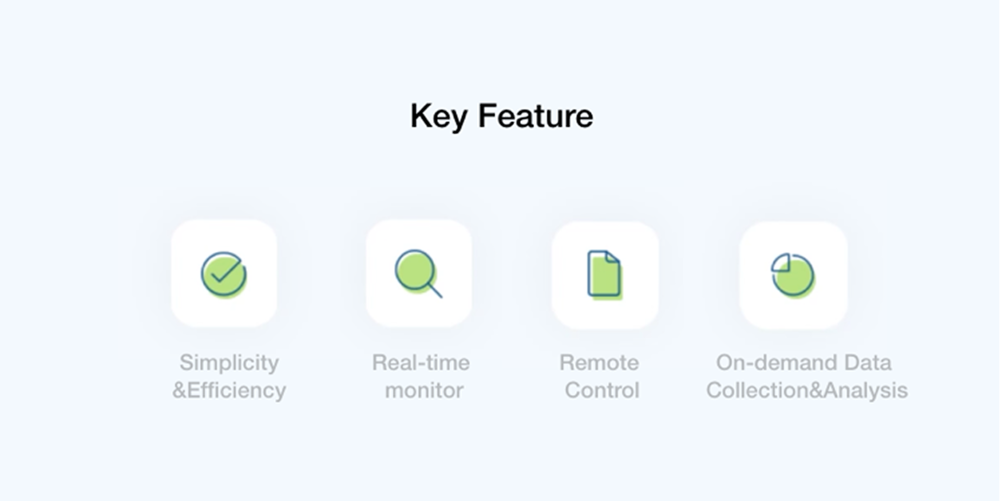
08SYNTHESIS
Mind Mapping
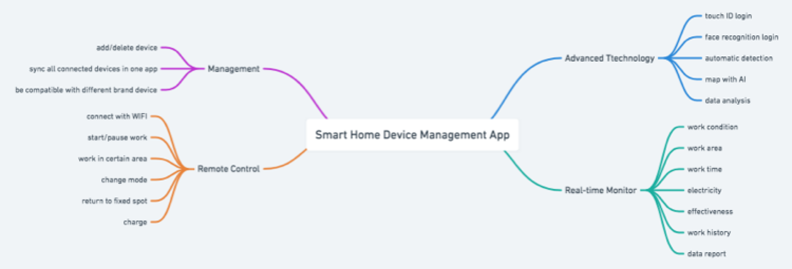
09FLOW DESIGN
User Flows
In order to visualize the journey that my target user would take, I created a user flow within the app’s core features.
The user flow lays out the user's movement through the mobile app, mapping out each and every step the user takes—from entry point right through to the final interaction.
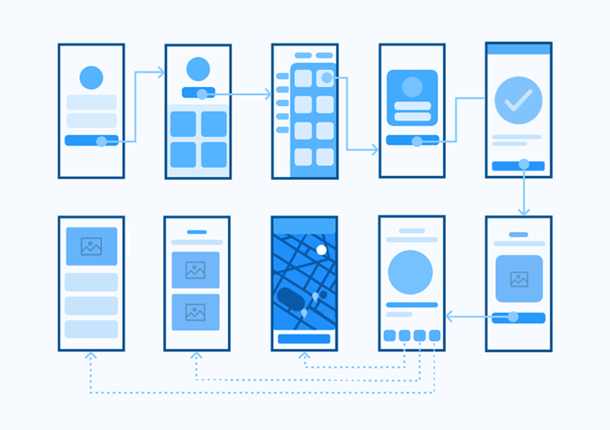
10WIREFRAMING
Sketching the Interface
As the streamlined and integrated flow became more and more clear, I began sketching wireframes of the new solution. The purpose of the low fidelity sketches was mainly to ensure hierarchy, design goals, and make sure that I was using the proper components for each function.
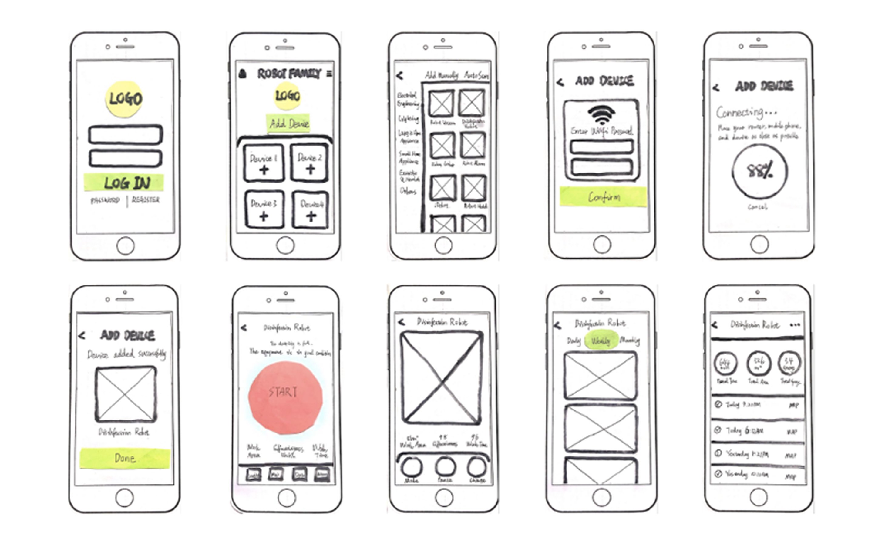
11PROTOTYPE
Prototyping
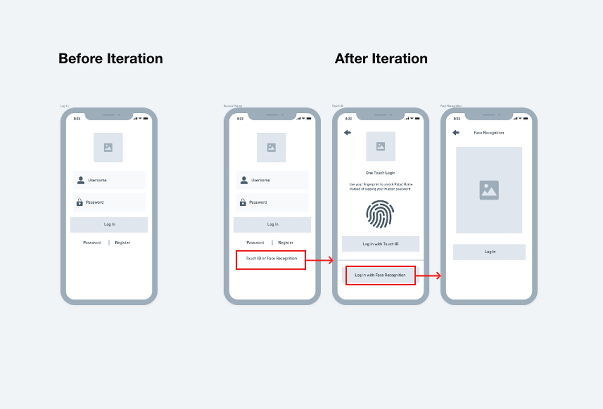
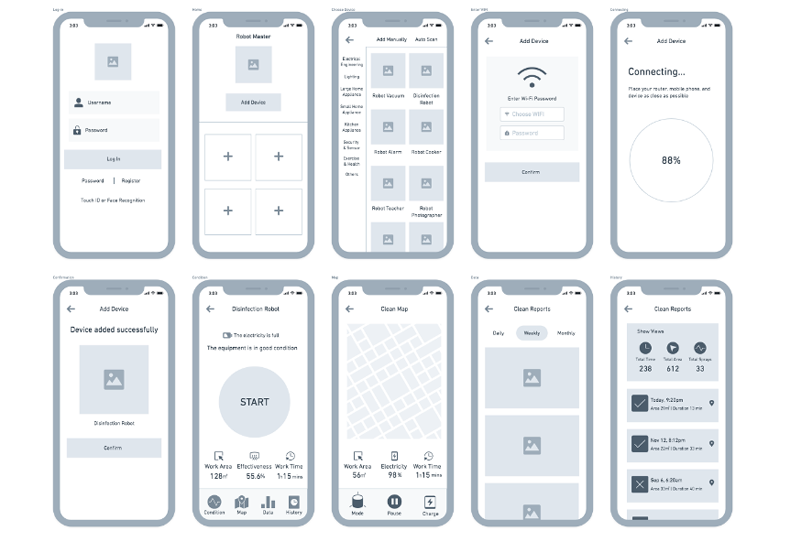
12OUTCOME
Final Output
The final product allows users to centrally manage and control all their smart devices conveniently and efficiently. First, users can quickly log in to the app through three different methods: username login, fingerprint login and face recognition. Then, they can choose to add the smart device they want to use with one click. After the device connected successfully, they can enter the dashboard for remote control, real-time monitor, data tracking and other functions.
13CLOSING
Reflection
The idea of smart home robot management tool has been in my mind for a long time, and I am so delightful to have the opportunity to make it real in school project this time. Through this project experience, I first learned that triangulating Data is very helpful, which can figure out what user really wants. Because I’m designing a new tool that is nothing like it, it is hard for people to imagine they are using it until you present the prototype. I need to carefully evaluate the data collected from the user interview to see if they truly mean it. E.g. when people say they feel troublesome when mastering smart home devices by different apps, they actually need an app to centrally manage their smart home devices of different brands.
Secondly, keeping balance between time, scope and resource is very important. Given that I only had 4 weeks to complete the whole project, I have made a lot of assumptions and made decisions based on casual interviews and secondary research. Also, for the high-fidelity prototype, I didn't do usability testing. Instead, I used heuristic evaluation by my designer friends and received a lot of helpful suggestions.
14NEXT STEPS
Future Development ⚡
There are many more ways to refine and expand the scope of Robot Master down the road. One next step I would like to pursue is to seek the experts on the creation of content for the "challenge". If time permits, I would like to define tasks, establish objectives and evaluate the app.